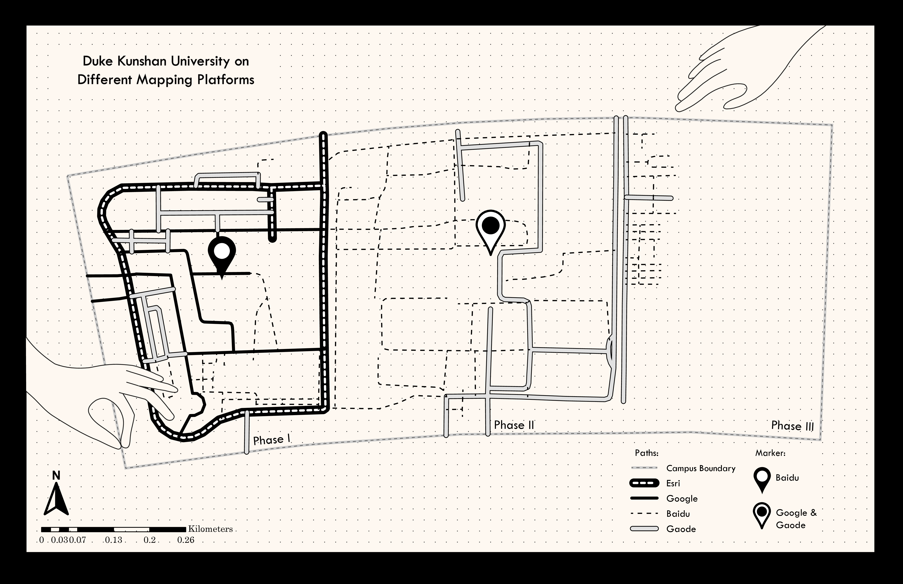
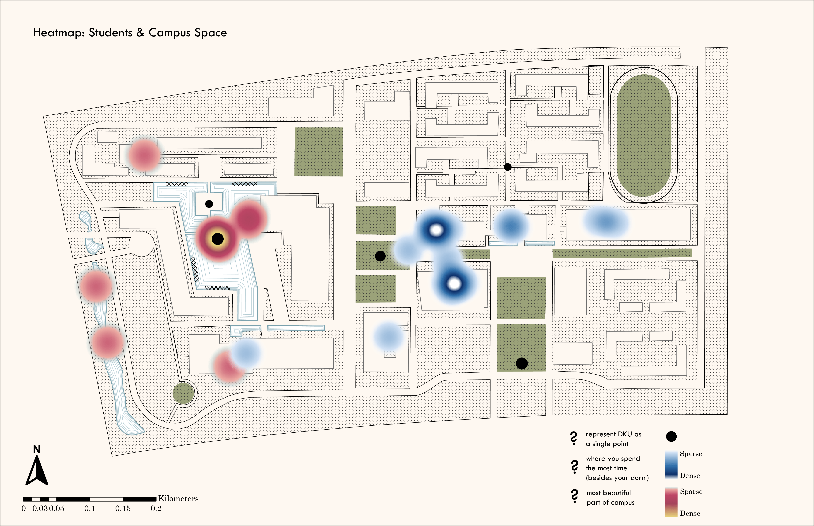
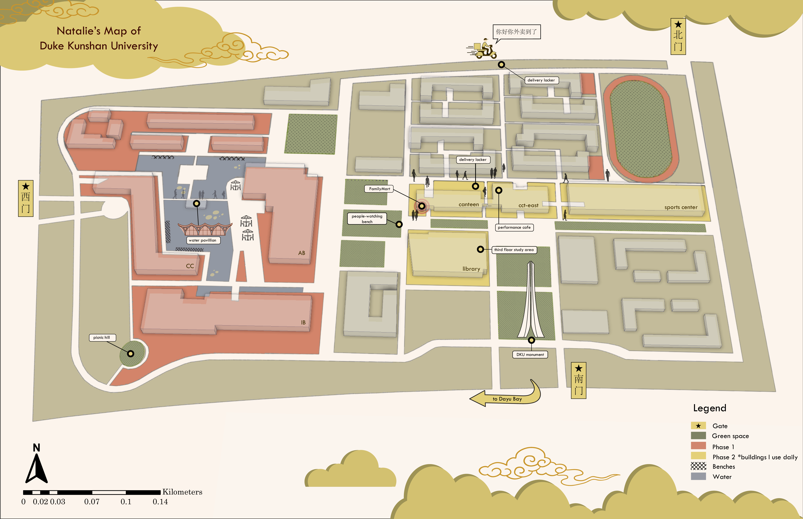

Counter-mapping Duke Kunshan University
Creative Cartography final project: Collection of 3 maps counter-mapping (challenging traditional maps to represent alternative perspectives) Duke Kunshan University

This map examines the digital representation of Duke Kunshan University (DKU) by layering its paths and pinpoints according to different digital mapping platform basemaps -- Esri, Google, Baidu, and Gaode. Basemaps play a significant role in shaping perceptions and legitimacy of space, yet the layered basemaps have widely varied depictions of the physical layout of DKU. Despite these variations, none of the maps "accurately" capture DKU's evolving campus layout, with paths appearing to be arbitrarily drawn - underscoring the challenges of digital representation in capturing the dynamic nature of physical space.

"Students & Campus Space" brings out the myriad ways in which individuals perceive and engage with shared spaces on Duke Kunshan University's campus. Heatmap data was collected by volunteered geographic information submitted by a group of 12 undergraduate students on the following areas of interest: the most beautiful part of campus, where you spend the most time (besides your dorm), and where you would mark DKU as a single point. The resulting heatmaps highlight the similarities of shared experiences, as well as reflect evolving space utilization dynamics post-Phase 2 expansion (evidenced by a disconnect between the "aesthetically pleasing" Phase 1 and the "functional" Phase 2).

This map offers a personal counter-mapping of DKU, providing a student-centered view of daily campus life. Despite DKU's portrayal as a 'utopia' - this shiny new global campus built on the rice fields of Kunshan - students often criticize its design as prioritizing stakeholders over students, leading it to feel overly sterile and flat. By coloring and annotating a DKU map from lived experiences, this map emphasizes the vitality of student life while also noting the loss of certain campus essence due to Phase 2 expansion (ghosts of students crossing the pond).